your_data = # plug your awesome dataset here
model = SuperCrossValidator(SuperDuper.fit, your_data, ResNet50, SGDOptimizer)Training Guide
TipLearning Objectives
After reading this guide you should be able to:
- Apply a systematic recipe for training deep learning models from data inspection through regularization.
- Identify common issues in image datasets: corrupted images, class imbalance, ambiguous labels, and resolution requirements.
- Set up a debugging pipeline using input-independent baselines, batch overfitting, and input visualization.
- Select appropriate regularization techniques — data augmentation, early stopping, weight decay, transfer learning — for a given scenario.
- Choose a modern pretrained backbone (DINOv2/v3, SigLIP, ConvNeXt-V2, SAM, EVA) and decide on a fine-tuning strategy given dataset size and domain.
TipTLDR Recap
4-Step Training Recipe
- Know the data — inspect distributions, corrupted samples, class imbalance, label quality
- Build a baseline pipeline — define metrics, fix random seeds, verify with simple models
- Overfit first — achieve strong training performance before worrying about generalization
- Regularize — augmentation, early stopping, weight decay, transfer learning
Key Insights
- ML frameworks are “leaky abstractions” — bad hyperparameters fail silently, not loudly
- An input-independent baseline reveals whether a model is learning from the data at all
- Data augmentation is the most practical form of regularization for image tasks
- Transfer learning is the default starting point — pre-trained features generalize well
- Modern pretrained backbones (DINOv2/v3, SigLIP, ConvNeXt-V2) dramatically outperform ImageNet-only pretraining; choose based on task, domain, and compute budget
Weight Decay
\[\theta_{t+1} = \theta_t (1 - \lambda) - \eta \nabla J(\theta)\]
- Penalizes large weights at each update step, encouraging simpler models
1 A Recipe for Training Neural Networks
How does one successfully train a deep learning model? Modern ML frameworks make training appear straightforward, but Karpathy observed that these abstractions are leaky: without a solid understanding of what happens inside, backpropagation, gradient descent, loss dynamics, mistakes creep in undetected. A model with a learning rate that is too high may converge to a poor solution without raising any error. A data preprocessing bug may silently corrupt every batch. Training neural networks fails silently.
The recipe below, based on Karpathy’s approach A Recipe for Training Neural Networks, structures the process into four phases and helps avoid the most significant pitfalls. Steps 5 (hyperparameter search) and 6 (final squeezing techniques such as ensembling and Mixup) exist but are beyond the scope of this guide.
2 Step 1: Know the Data
Before fitting any model, inspect the dataset thoroughly. For images in particular, one can examine sample data points, their distribution, label quality, and potential anomalies. Corrupted images, skewed class distributions, duplicates, and ambiguous labels can all be found at this stage. Addressing them early is far cheaper than debugging a trained model.
Figure 1 illustrates that even technically usable images may be severely distorted. Detecting these early informs preprocessing decisions.
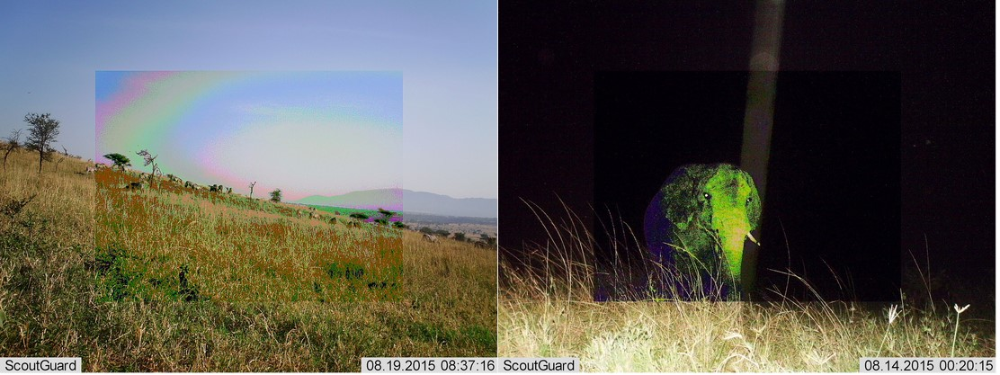
Figure 2 shows typical challenging cases in modeling images from camera traps. For example, small regions of interest (e.g. a small or distant animal) suggest that aggressive downscaling (e.g., to 224×224) may removes the relevant patterns entirely.
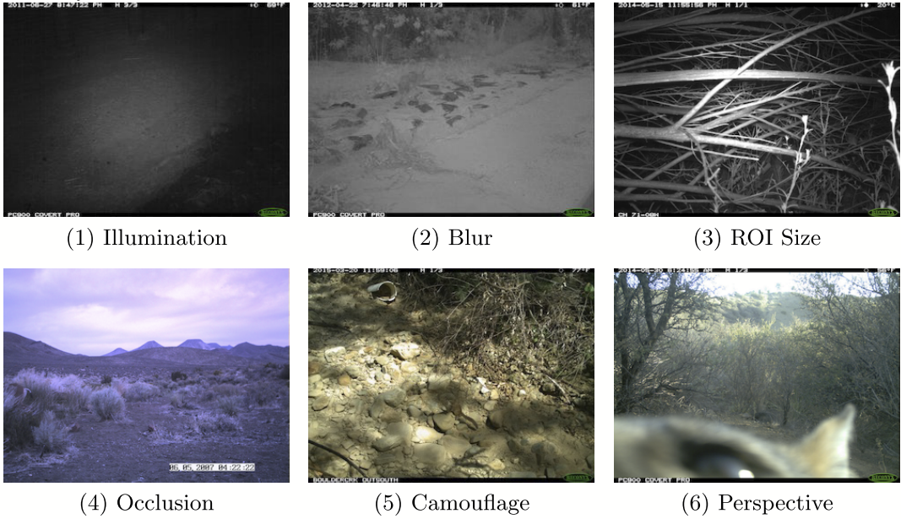
Figure 3 shows that class imbalance, for camera trap datasets, is the norm rather than the exception. In this camera trap dataset, a single species (“Deer”) comprises approximately 65% of images. A model trained on such a distribution might be biased to predict the majority class.
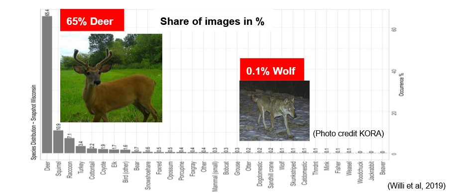
Sometimes, one may also encounter certain limitations, such as images that are ambiguous or belong to multiple classes. Figure 4 shows an example with a herd of animals containing multiple species (Thomson’s and Grant’s Gazelle). Here, image classification does not work well and object detection is a more natural choice.
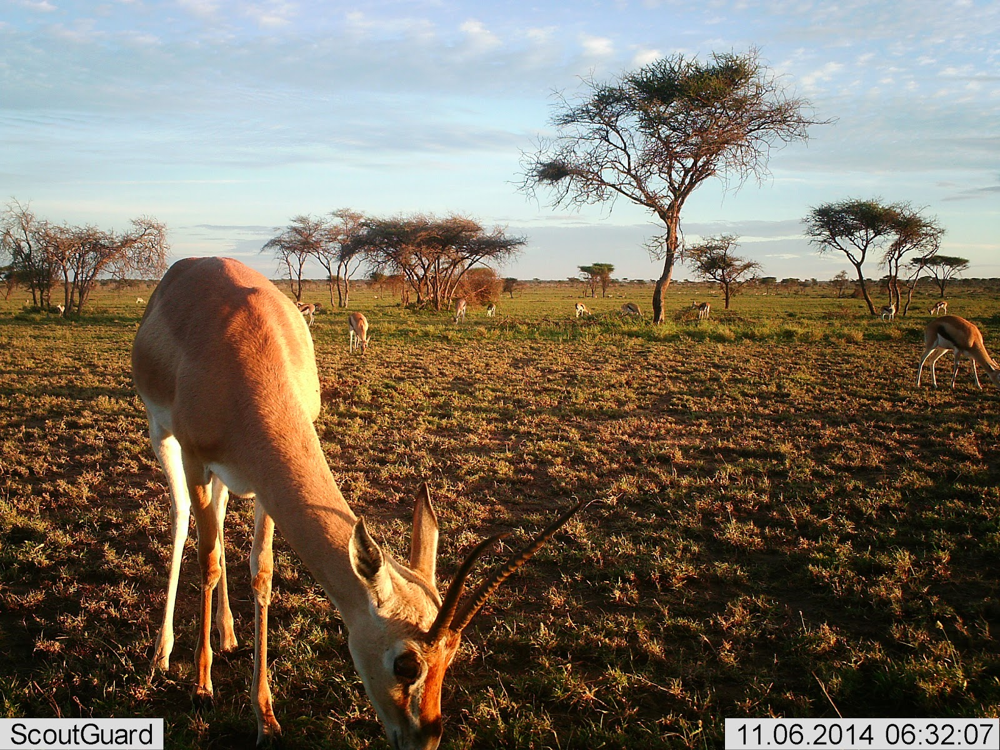
A practical data inspection checklist:
- Sample and examine images across all classes
- Check class distribution; flag severe imbalances
- Look for corrupted, blurry, or ambiguous images
- Assess whether the default image resolution is sufficient for the task
- Evaluate label quality: Can a domain expert reliably label each image?
3 Step 2: Build a Baseline Pipeline
With a clear picture of the dataset, the next step is to establish a training / evaluation pipeline (see Figure 5) before fitting any serious model. Define the performance metric, create train/validation/test splits, and implement logging. Starting with a simple, well-understood model reduces the chance of undetected bugs.
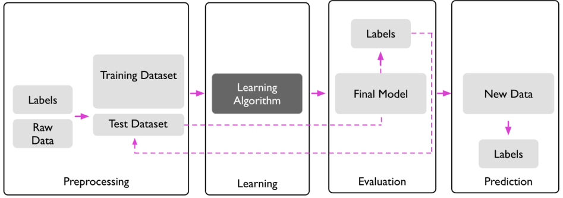
Debugging tips for the baseline phase:
- Fix the random seed. Results must be reproducible before any meaningful comparison can be made.
- Train an input-independent baseline. Set all input pixels to zero and train. Since the model receives no signal from the image, it will learn to predict the class distribution of the training set. Any model that performs worse than this has a fundamental pipeline error.
- Overfit a single batch. Feed the same small batch repeatedly. If training loss does not reach near-zero, there is a bug in the forward pass or loss computation.
- Visualize inputs just before the forward pass. Inspect what the model actually receives — augmentation bugs and preprocessing errors are often invisible until rendered.
- Track fixed validation samples throughout training. Watching the same examples evolve over epochs reveals how the model’s behavior changes.
NoteQuiz: Input-Independent Baseline
What output would you expect from a model trained on zeroed-out inputs?
Click for result
Since the model receives no information from the image, it cannot distinguish between individual samples. To minimize average cross-entropy loss, the optimal strategy is to output the class distribution of the training set. For example, if 65% of images are deer, the model will predict approximately \(P(\text{deer}) \approx 0.65\) for every input.
This serves as a sanity check: if the actual model performs worse than this baseline, something is fundamentally wrong with the training pipeline.
A human baseline is also worth establishing where possible. For certain tasks, labels are subjective — annotators may disagree — which implies an upper bound on achievable performance. In the Snapshot Serengeti camera trap dataset, amateur annotators achieved 96.6% agreement with expert labels, setting a concrete ceiling for automated classification.
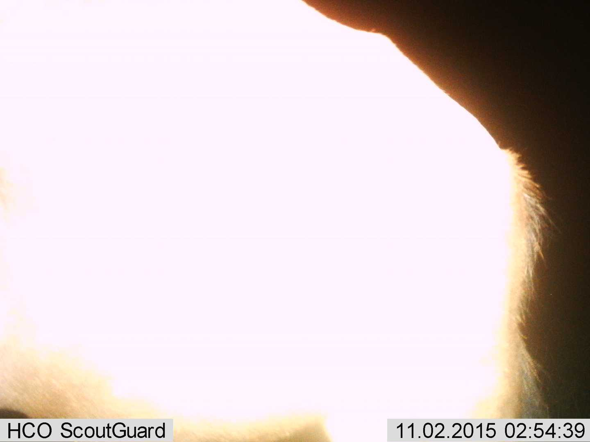
4 Step 3: Overfit First
At this point the dataset is understood and the evaluation pipeline is verified. The focus now shifts to achieving strong training performance, deliberately setting aside generalization for the moment.
For model selection, follow the principle: don’t be a hero. Use an established architecture such as ResNet-50 rather than designing a custom one. For the optimizer, Adam is a conservative and generally effective choice — it is less sensitive to the learning rate than SGD, which reduces the chance of a poor hyperparameter choice masking a real problem.
If the model cannot overfit the training set at this stage, the problem is in the architecture or training setup — not in regularization. Only move to Step 4 once training performance is strong.
5 Step 4: Regularize
With strong training performance established, the goal is now to improve performance on the validation set. Regularization techniques reduce the gap between training and validation by limiting overfitting.
5.1 More Training Data
The most effective regularizer is simply more labeled data. If collecting additional data is feasible, a learning curve — training models on subsets of increasing size and observing validation performance — estimates how much additional data would help.
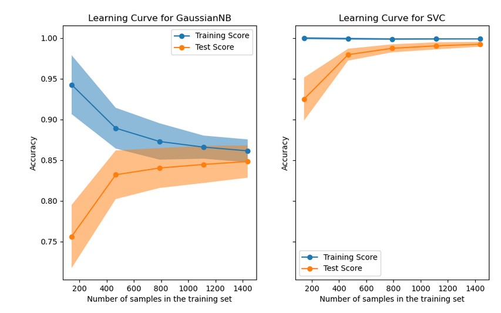
5.2 Data Augmentation
When additional data cannot be collected, augmentation generates new training examples by applying random transformations to existing images on-the-fly. Each epoch the model sees slightly different versions of the same images, which reduces memorization.
Common augmentation families:
- Geometric: random horizontal flips, crops, rotations, scaling
- Photometric: brightness, contrast, saturation, grayscale
- Advanced: Mixup (blending two images), CutMix (swapping patches between images), RandAugment (automated policy search)
Libraries such as AugLy (Figure 8), Albumentations (Figure 9), and Kornia (Figure 10) extend PyTorch’s built-in transforms with more complex augmentation pipelines.
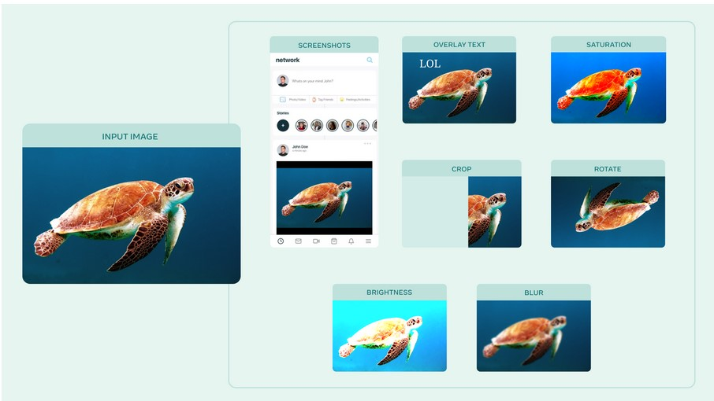
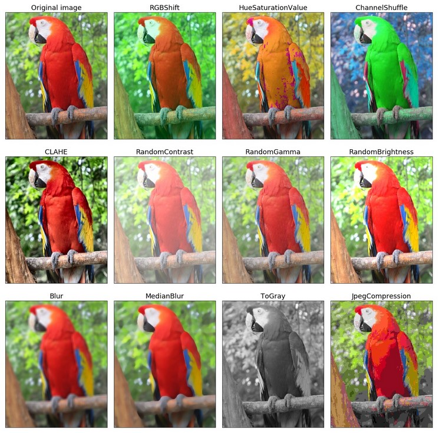
Figure 11 illustrates augmentations applied to a single image: color changes, cropping, and rotations all produce new training examples from the same source.
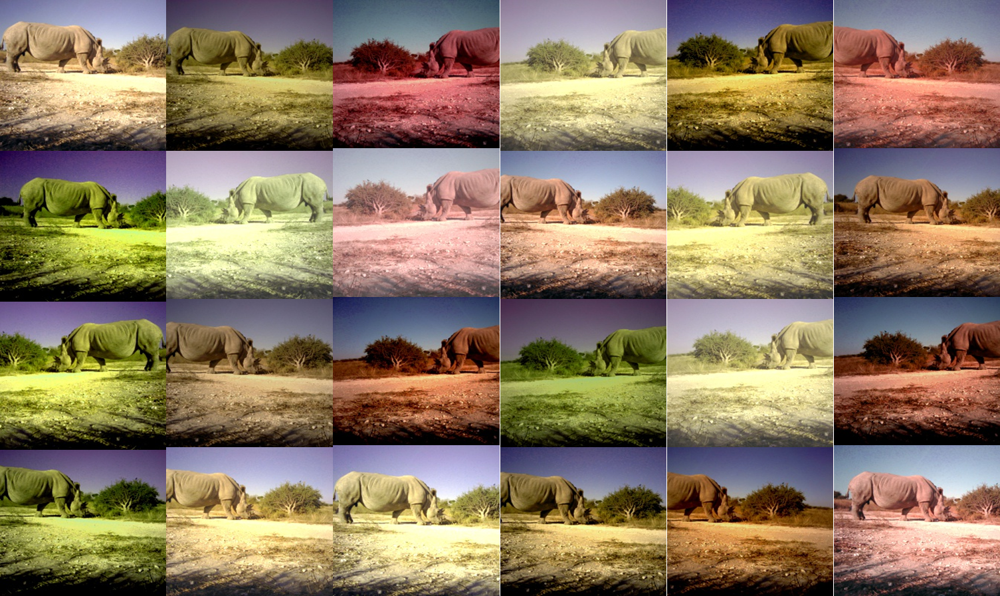
A practical guideline: when fine-tuning a pre-trained model, use minimal augmentation (random crops and horizontal flips). When training from scratch, heavier augmentation is typically beneficial.
Synthetic data is another option. Figure 12 shows an example where 3D animal models were composited into real and synthetic backgrounds, effectively expanding the camera trap training set.
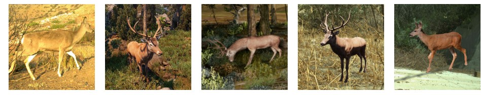
5.3 Early Stopping
Early stopping monitors validation performance in regular intervals (e.g. after each epoch) and halts training when no improvement is observed for a set number of cycles. This prevents the model from continuing to memorize training data after the point of best generalization.
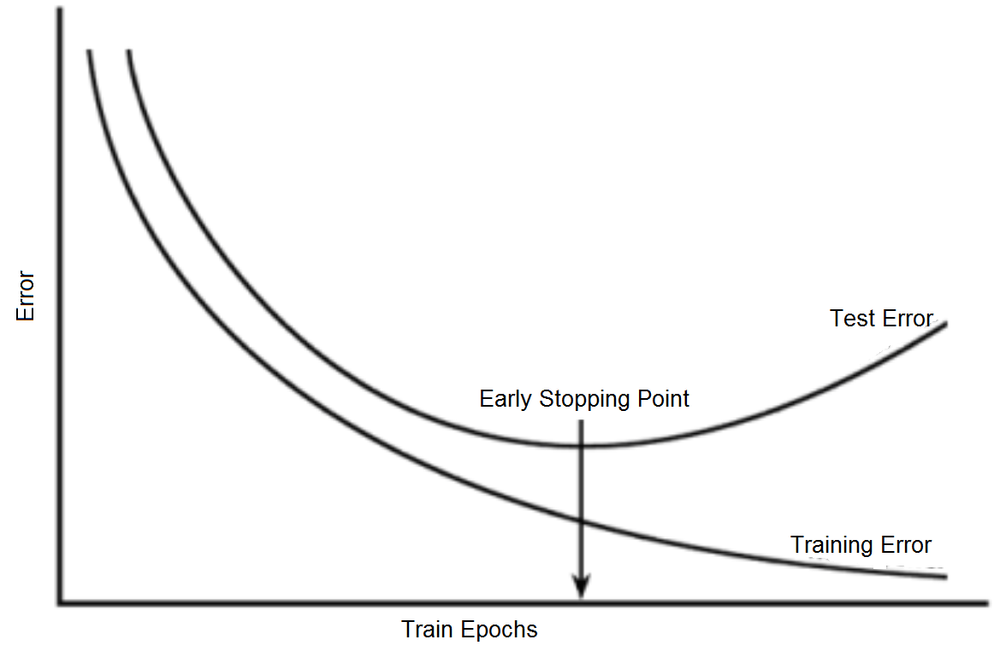
5.4 Weight Decay
Weight decay penalizes large parameter values at each gradient update, encouraging simpler models. The modified update step is:
\[ \theta_{t+1} = \theta_t (1 - \lambda) - \eta \nabla J(\theta) \]
where \(\lambda\) is the decay factor, \(\eta\) is the learning rate, and \(\theta\) are the model parameters. Implementations are available directly in PyTorch optimizers via the weight_decay argument.
5.5 Transfer Learning
Transfer learning is the practical default for image classification: start from a model pre-trained on a large dataset such as ImageNet and adapt it to the target task. Pre-trained features — edges, textures, shapes — generalize broadly across vision domains, making fine-tuning far more data-efficient than training from scratch.
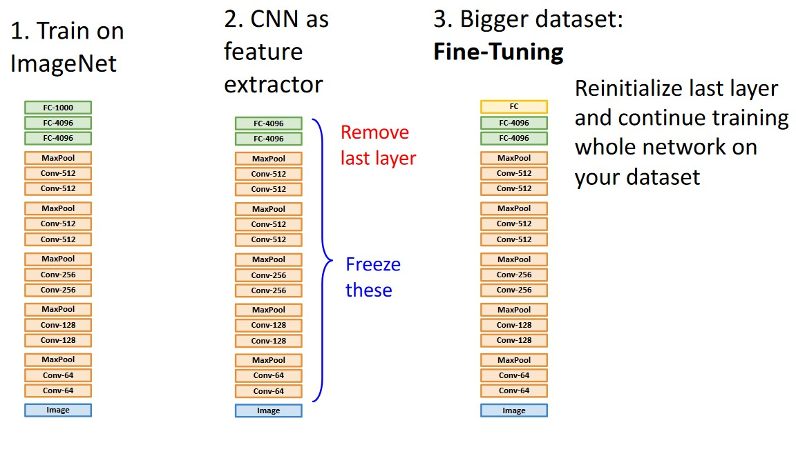
Adaptation strategies range from freezing the backbone entirely (feature extraction) to fine-tuning all layers. The appropriate strategy depends on dataset size and domain similarity. More strategies are covered in the Downstream Adaptation lecture.
6 Modern Pretrained Backbones
ImageNet-pretrained ResNets remain solid baselines, but a new generation of foundation-model backbones trained on orders-of-magnitude more data consistently outperforms them, often with less fine-tuning data required. The table below summarizes some practical options:
| Model | Pretraining | Strengths | Good for |
|---|---|---|---|
| DINOv3 | Self-supervised (images) | Strong general-purpose features; no labels needed | Feature extraction, k-NN, linear probe |
| CLIP and variants | Vision–language (image–text) | Zero-shot and few-shot transfer; multilingual | Open-vocabulary classification, retrieval |
| ConvNeXt-V2 | Self-supervised (FCMAE) | Pure CNN; no attention; fast inference | When ViT overhead is a concern |
| SAM3 | Large-scale segmentation | Powerful spatial features; click-based prompting | Segmentation, detection pre-training |
Choosing a backbone:
- Default choice: DINOv3 is a strong all-round starting point for feature extraction and fine-tuning on domain-specific data.
All of these backbones are available via timm (pip install timm) with a consistent API:
import timm
model = timm.create_model("vit_base_patch14_dinov2", pretrained=True, num_classes=0)
features = model(images) # (B, 768) feature vectors, no headHow to adapt a chosen backbone to a target task — k-NN, linear probe, LoRA, partial or full fine-tuning, and how to choose between them based on dataset size and domain similarity — is covered in the Downstream Adaptation lecture.
7 Monitoring Training Progress
Beyond loss and accuracy curves, it is valuable to track model behaviour on a fixed set of validation images throughout training. For each checkpoint, run inference on the same small set of examples (e.g., 16–32 images spanning all classes) and log the top predictions alongside the images. This reveals qualitative changes — the model gaining confidence on easy examples, reducing confusion between similar classes — that aggregate metrics can obscure.
A complementary view is a prediction-confidence plot over epochs: for the same fixed samples, track how the predicted probability for the correct class evolves. An ideal trajectory rises steadily; oscillation or sudden drops signal instability or learning-rate issues.
NoteTip: Track fixed samples in Weights & Biases / MLflow
Both W&B and MLflow support logging images with annotations per step. Log the fixed validation grid at the end of each epoch with predicted class and confidence overlaid. Reviewing this timeline at the end of training is one of the fastest ways to diagnose where the model still fails.
8 References
Beery, Sara, Yang Liu, Dan Morris, et al. 2020. “Synthetic Examples Improve Generalization for Rare Classes.” Proceedings - 2020 IEEE Winter Conference on Applications of Computer Vision, WACV 2020, 852–62. https://doi.org/10.1109/WACV45572.2020.9093570.
Beery, Sara, Grant Van Horn, and Pietro Perona. 2018. “Recognition in Terra Incognita.” Lecture Notes in Computer Science (Including Subseries Lecture Notes in Artificial Intelligence and Lecture Notes in Bioinformatics) 11220 LNCS (July): 472–89. https://doi.org/10.1007/978-3-030-01270-0_28.
Johnson, Justin, and David Fouhey. 2021. EECS 442: Computer Vision. Lecture {Notes} / {Slides}. https://web.eecs.umich.edu/~justincj/teaching/eecs442/WI2021/.
Raschka, Sebastian, and Vahid Mirjalili. 2020. Python Machine Learning: Machine Learning and Deep Learning with Python, Scikit-Learn, and TensorFlow. Second edition, fourth release,[fully revised and updated]. Expert Insight. Packt Publishing.